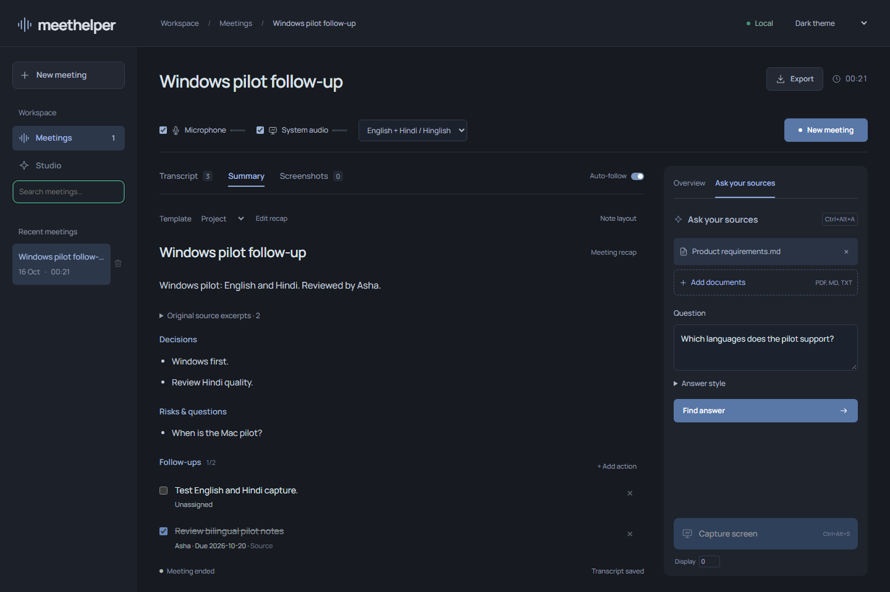

Follow along
See a live transcript and a short running brief while the meeting unfolds. English and Hindi are supported; Hinglish quality is still being tested.
Make room to listen
A quiet, local-first workspace for meeting notes. Follow the conversation, catch what matters, and leave with a clear record.

Less catch-up, more presence
See a live transcript and a short running brief while the meeting unfolds. English and Hindi are supported; Hinglish quality is still being tested.
Save a screen moment beside the words being discussed. Review the transcript, source-linked recap, decisions and action items afterwards.
Set a model for each task. Run supported models on your device, or use a provider API key for the tasks you choose. The current tested combination is listed in the app’s benchmark notes.
Search past meetings, refine transcript labels and export notes as Markdown, JSON, SRT, VTT or printable HTML.
Choose what leaves your device
Run supported speech and text models on your Windows device. Or connect a supported cloud provider for a specific task. That choice changes where its audio or text is processed.
A little more on privacy◌ You choose a route for each feature.
A calmer way to keep up
You decide when a meeting is recorded. Pause, resume or end it from your workspace.
Check the live words, meeting brief and any screen moments you choose to save.
Review an automatic recap, decisions and tasks, then export notes for your workflow.
Designed for your desk
Meethelper keeps transcript text, screenshots and notes on this device. Microphone audio is processed in memory. If you choose a cloud model, the content needed for that task goes to that provider. Your provider keys are kept in Windows Credential Manager.
Read the current privacy notesRecording starts
when you choose.
Cloud routes are
optional by task.
Keys stay in
Credential Manager.
Good to know
Not yet. It is in private alpha, and there is no public installer. The public website shares product information only.
The current app is Windows-first. macOS support is not available yet.
No. The current app labels microphone and remote audio, but does not automatically identify individual speakers.
Supported local model routes are available. Cloud providers are optional, and any content they receive depends on which provider and feature you choose.
Early, by design
Meethelper is a Windows private alpha. We’re testing local capture and model workflows before opening access more widely.
Private alpha · Windows